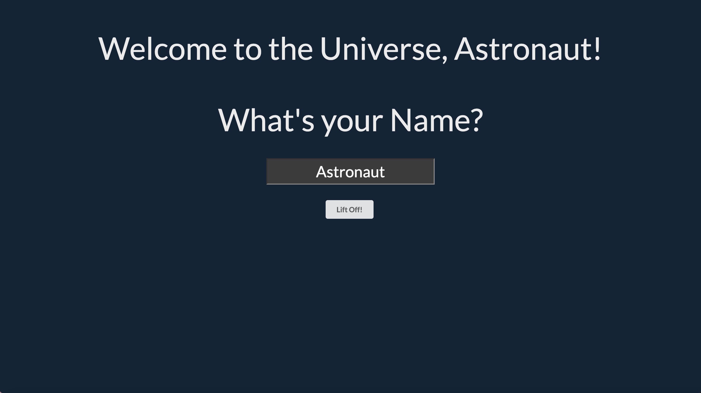
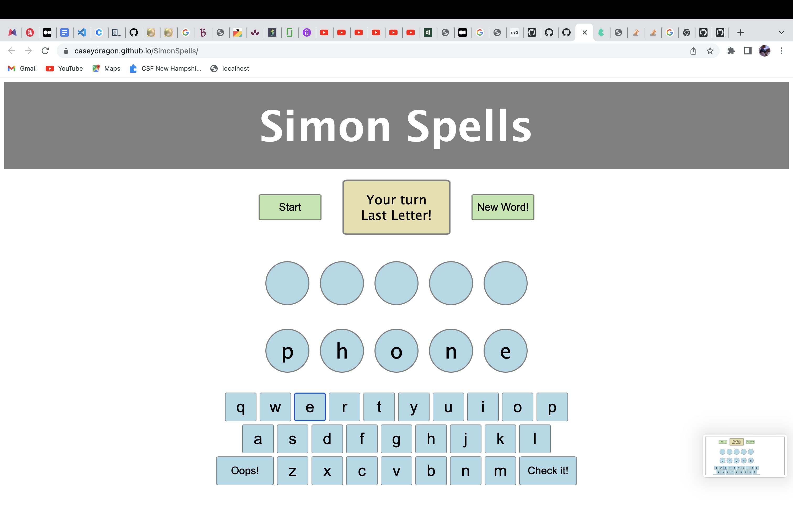

Planet Tour (GH)
Planet Tour (Deployed)
A simple React App game that allows the player to explore the solar system. Information from an external api is used to display information about each planet that the astronaut visits
Simon Spells (GH)
Simon Spells (Deployed)
A spell along with me game that allows the player to spell Simon's word. This app was built with simple HTML and javascript.